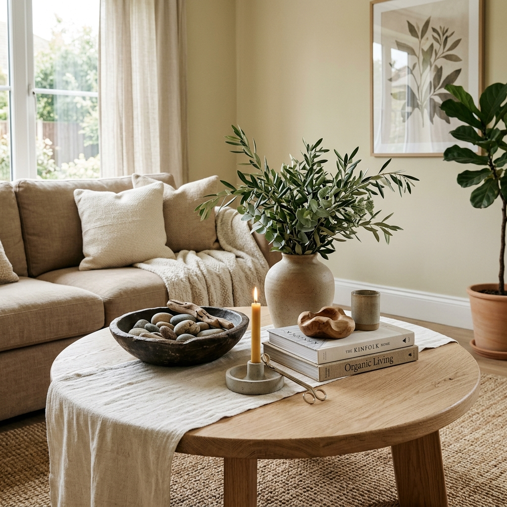

Small Apartment Living Room Ideas: 12 Ways to Make Compact Spaces Feel Bigger
Looking for small apartment living room ideas that make your space feel bigger without sacrificing comfort or style? The right furniture layout, space-saving furniture, natural light, and smart storage can help you make better use of every square foot. Explore these 12 practical small living room decor ideas to create a more open, organized, and functional apartment.
Small Apartment Living Room Ideas: At a Glance
- Best layout: Arrange furniture to maintain clear walking paths.
- Space-saving furniture: Choose compact, multifunctional pieces.
- Make rooms feel bigger: Use mirrors, natural light, and light visual layers.
- Smart storage: Use vertical space and reduce visible clutter.
- Studio apartment tip: Define living zones with rugs and furniture placement.
The Small Living Room Problem Nobody Talks About
Most small living room advice simply tells you to "declutter" or "paint the room stark white." While well-intentioned, that advice fails to solve the real architectural challenge: how to make a compact, fixed-footprint space feel comfortable and curated rather than restricted.
Real spatial transformation in rented apartments — where knocking down walls, replacing flooring, or altering electrical wiring isn't an option — requires strategic decisions about scale, sightlines, and light distribution. The goal isn't sterile minimalism; it's intentional design where every square foot works harder. For entryway space-saving before entering the living space, see our small apartment entryway organization guide, or explore why some apartments feel expensive regardless of square footage.
💡 Designer Principle: A small room feels cramped when the eye encounters visual dead-ends. When your sightline travels freely beneath furniture, across continuous rugs, and toward vertical light sources, the space reads as twice its physical size.
"In a small living room, every object must justify its presence through either physical utility or exceptional sculptural form. The most spacious rooms aren't the biggest — they're the most cohesive."
— Interior Design Principle · Small-Space Spatial StrategySmall Living Room Rules of Thumb at a Glance
Use these flexible planning guidelines and proportion benchmarks to help arrange a comfortable, functional small living room:
| Design Element | Planning Guideline | Visual & Spatial Benefit | Practical Consideration |
|---|---|---|---|
| Traffic Clearance | 30 to 36 inches where space permits | Maintains an unobstructed, comfortable route between doorways, windows, and main seating | A useful planning target rather than a strict rule; prioritize easy daily circulation over rigid symmetry |
| Seating Silhouette | Raised legs (often 4–7 inches) where suitable | Exposed legs allow light and sightlines to pass beneath the sofa, creating a lighter visual footprint | Not mandatory for every piece; tailored upholstery, clean lines, and compact depth also keep visual weight balanced |
| Area Rug | Sized to room dimensions and seating layout | Resting at least the front legs of seating on the rug visually anchors and unifies the conversation area | Dimensions depend on room size; avoid floating rugs so small that seating pieces feel disconnected |
| Curtain Placement | Mounted higher toward the ceiling line and wider than window trim | Draws the eye upward to create the illusion of vertical height and lets maximum daylight in when drapes are open | A flexible technique; adjust bracket height based on ceiling height, crown molding, and standard panel lengths |
| Statement Mirror | Proportioned to wall scale and furniture placement | Reflects ambient natural light and introduces a sense of depth when placed opposite or adjacent to windows | Size and placement depend on wall dimensions, furniture arrangement, mounting safety, and available daylight |
| Layered Lighting | Combine 2–3 light sources at varied heights (optional warm 2700K–3000K range) | Spreads soft illumination across corners to reduce harsh shadows and create an inviting atmosphere | Bulb warmth is a personal preference; relying solely on a single high-glare ceiling fixture tends to flatten compact spaces |
Layout & Traffic Flow: Float Furniture Off the Walls
The Problem: When faced with a compact footprint, most dwellers instinctively push every sofa, armchair, and bookshelf flat against the drywall ("perimeter lining"). While intended to open the room's center, this creates an awkward, cavernous gap in the middle, highlights the room's rigid boundary lines, and turns the living room into a waiting-room arrangement.
The Practical Solution: Consider pulling your main seating slightly forward from the back wall when space allows. Floating furniture introduces subtle shadow lines and breathing room that trick the eye into perceiving greater depth. Maintain a clear, comfortable walking path between the entrance, windows, and seating area. from the front entrance or hallway directly to windows and seating, ensuring no one has to squeeze sideways past a coffee table.
Small Apartment Living Room Layout Ideas
The best furniture arrangement depends on your room shape, available floor space, and daily needs. Consider these practical starting points:
- Narrow rectangular living room: Position the sofa along a longer wall, choose a compact coffee table, and maintain a clear walking path through the room.
- Square living room: Arrange seating around a central focal point while leaving enough open space for comfortable movement.
- Studio apartment: Use a rug, the back of a sofa, or a low open shelf to visually separate the living area from the sleeping or dining zone without blocking natural light.
Measure your room, furniture, doorways, and walking routes before deciding on an arrangement. Adjust these layouts to fit your actual space rather than following fixed dimensions.
💡 Renter Layout Hack: In a narrow 11' × 14' apartment living room, floating a 78-inch sofa just 4 inches forward leaves space for an ultra-slim behind-the-couch console table. This gives you a discreet surface for table lamps, book stacks, and device charging without consuming usable walkway space.
⚠️ Common Mistake to Avoid: Pushing a deep chaise sectional into the primary walkway or directly in front of baseboard heaters, which disrupts natural room circulation and makes daily living frustrating.
Furniture Scale & Visible Floor Space: Choose Slender, Exposed Legs
The Problem: Heavy, boxy sofas with fabric skirts, solid block credenzas, and thick upholstered armchairs have immense visual mass. Because their bases sit flush on the floorboards, they block sightlines and act like solid visual barriers, making the floor area feel chopped into tiny fragments.
The Practical Solution: Choose sofas, accent chairs, and storage furniture with visible legs when they suit your room and needs. Elevated furniture allows more of the floor to remain visible, which can make a compact living room feel less crowded. Slim legs and open bases can also create a lighter visual appearance than bulky, floor-level furniture.
Optional Layout Check: As a visual starting point, compare the sofa’s length with roughly two-thirds of its anchor wall. Treat this as a flexible reference; doors, walkways, heating vents, and nearby furniture should determine the final size and placement.
💡 Budget Renter Upgrade: If your sofa has removable legs, check whether compatible replacement legs are available before buying new furniture. Slim, tapered legs can give a bulky sofa a lighter appearance while allowing more floor space to remain visible. Confirm the fitting type, weight capacity, and manufacturer guidance before making the switch.
⚠️ Common Mistake to Avoid: Choosing an oversized sectional that restricts walking paths and leaves little usable floor space. Measure your room and compare furniture dimensions before buying. A compact sofa with comfortable seating may work better than a large sectional.
Statement Mirrors: Reflect Natural Light and Create Phantom Depth
The Problem: Most compact apartments feature only a single window wall, leaving back corners shadowy and giving the living room an enclosed, tunnel-like feeling during daytime hours.
The Practical Solution: Use a well-positioned mirror to reflect available natural light and create a greater sense of visual depth in a small apartment living room. Place it opposite or adjacent to a window where it can reflect daylight, greenery, or an attractive part of the room. Choose a mirror size that suits your wall and furniture rather than following a fixed minimum dimension.
💡 Placement Secret: Position the mirror at a height that reflects something visually appealing from your usual viewing position, such as natural light, artwork, or outdoor greenery. Check the reflection before fixing it to the wall to avoid unwanted glare or cluttered views.
⚠️ Common Mistake to Avoid: Placing mirrors where they reflect clutter, harsh glare, or an unattractive part of the room. Before mounting a mirror, check what it reflects from different viewing angles. A thoughtfully positioned mirror is more useful than simply adding more reflective surfaces.

Layered Lighting: Eliminate Overhead Glare with Three-Point Illumination
The Problem: Relying exclusively on a single harsh central ceiling fixture ("the standard apartment boob light") washes out shadows, highlights low ceilings, and casts unflattering downward glare that makes small rooms feel flat and institutional.
The Practical Solution: Combine different light sources to make a small apartment living room feel comfortable and functional. Use a floor lamp for general illumination, a table lamp for softer ambient light, and focused lighting for reading or other activities. Warm-white bulbs can create a cozy atmosphere, while adjustable brightness lets you adapt the room for different times of day.
💡 Renter Space Hack: If your living room has limited side-table space, consider a slim floor lamp or a corner lamp. It adds lighting without requiring another large piece of furniture and can help brighten darker areas of the room.
⚠️ Common Mistake to Avoid: Relying on one bright ceiling fixture to light the entire living room. A single light source can leave corners dark and make the space feel less inviting. Combine overhead lighting with floor or table lamps to create a more balanced result.

Rug Sizing & Placement: Go Oversized to Unify the Seating Zone
The Problem: An undersized area rug can make a small living room feel visually disconnected. When the rug sits separately in the middle of the seating area, the sofa, chairs, and coffee table may appear like unrelated pieces rather than part of one coordinated space.
The Practical Solution: Choose an area rug that fits your seating arrangement and leaves enough visible flooring around the edges. When space allows, position the rug so the front legs of the sofa and accent chairs rest on it. For tighter layouts, placing the coffee table and front portion of the seating area on the rug can still create a more unified look. Measure your room and furniture before choosing a rug size rather than automatically selecting a larger option.
💡 The Front-Leg Rule: If your room has enough space, place the front legs of your sofa and accent chairs on the rug. This visually connects the seating pieces and helps define the living area without requiring every piece of furniture to fit completely on the rug.
⚠️ Common Mistake to Avoid: Choosing a rug before measuring the room and furniture. A rug that is too small may separate the seating pieces visually, while an oversized rug can leave too little visible flooring. Check the dimensions and placement before purchasing.
Color & Texture: Build Depth with Tone-on-Tone Neutrals
The Problem: Too many competing colors, patterns, and decorative details can make a small living room feel visually busy. When furniture, cushions, curtains, and wall decor compete for attention, the space can appear less cohesive and more crowded.
The Practical Solution: Create a coordinated color palette using two or three complementary shades that suit your existing furniture and lighting. Neutral colors such as ivory, beige, warm grey, and soft taupe can provide a calm foundation, while darker or richer accents add contrast. Introduce texture through cushions, throws, rugs, curtains, and natural materials such as wood to create visual depth without overcrowding the room.
💡 Simple Styling Tip: Combine cushions in different sizes, textures, or complementary colors to make your sofa more inviting. You can use an odd-numbered arrangement as a starting point, but choose the number and placement that best suit your sofa's size and shape.
⚠️ Common Mistake to Avoid: Combining too many competing patterns and colors in one small seating area. Choose a consistent palette and balance patterned cushions with simpler fabrics so the overall arrangement feels coordinated.

High-and-Wide Curtain Placement: Hang Rods Near the Ceiling
The Problem: Hanging curtain rods directly above the window frame can make the window appear shorter and visually limit the height of the room. In a compact apartment, this can make the walls feel less spacious and the windows less prominent.
The Practical Solution: Consider mounting curtain rods higher than the window frame and extending them beyond the window edges where wall space allows. This creates the appearance of taller, wider windows and lets the curtains sit farther away from the glass when open. Choose a rod position and width that suit your ceiling height, window dimensions, and available wall space. Make sure the curtains can open without obstructing the window or nearby furniture.
💡 Renter Measuring Tip: Measure from your intended curtain rod position to the floor before purchasing panels. Choose a curtain length that allows the fabric to reach the floor neatly, with little or no excess fabric. Check the manufacturer's panel measurements and account for the rod and curtain hardware.
⚠️ Common Mistake to Avoid: Choosing curtains that are noticeably too short or too long for the room. Curtains that stop well above the floor can make the window treatment look unfinished, while excessive fabric pooling can collect dust and interfere with cleaning. Measure carefully before buying.
Vertical Storage: Free Floor Space with Floating Wall Shelves
The Problem: Bulky bookcases, storage cubes, and multiple floor-standing decorations can take up valuable space in a compact living room. When too many items occupy the floor, walking paths become restricted and the room can feel crowded.
The Practical Solution: Make better use of vertical wall space with floating shelves or compact wall-mounted storage. Arrange books, small decorative objects, and plants on shelves to reduce the need for additional floor-standing furniture. You can also use a slim plant stand (view plant stand) to display greenery without taking up as much floor space as a larger plant arrangement. Before installation, check wall type, shelf load capacity, and the appropriate mounting hardware.
💡 The 30% Negative Space Rule: When styling floating shelves, leave approximately one-third of each shelf completely empty. Negative space gives decorative book stacks and ceramics room to breathe and prevents shelves from reading as clutter.
⚠️ Common Mistake to Avoid: Overloading floating shelves with heavy books and decorative objects without checking their weight limits. Use suitable wall anchors or studs, follow the installation instructions, and distribute stored items safely across the shelves.

Multifunctional Furniture: Choose Versatile, Mobile Storage Pieces
The Problem: Using separate furniture pieces for every activity can quickly consume valuable floor space in a small apartment. Large coffee tables, standalone storage units, and bulky side tables can leave less room for movement and everyday activities.
The Practical Solution: Choose multifunctional furniture that serves more than one practical purpose. Storage ottomans can provide seating and concealed storage, nesting tables can be separated when needed and stacked when not in use, and compact rolling carts can serve as movable storage or side tables. Prioritize pieces that fit your available space and are easy to use in your daily routine.
💡 The Mobile Storage Advantage: A compact rolling cart can provide flexible storage for books, accessories, and everyday essentials. Move it beside the sofa when needed or reposition it elsewhere to free up floor space. Check its dimensions, weight capacity, and wheel design before purchasing.
⚠️ Common Mistake to Avoid: Buying convertible furniture without considering its size, weight, storage capacity, and ease of use. A multifunctional piece is only useful if it fits your room and works comfortably for your everyday needs.

Visual Zoning: Define Living and Dining Areas Without Walls
The Problem: In studio apartments and compact open-plan homes, the living, dining, and working areas often share one continuous space. Without a clear arrangement, furniture can feel scattered, walking paths can become awkward, and each area may lack a distinct purpose.
The Practical Solution: Create separate functional zones through furniture placement, rugs, lighting, and consistent decor rather than relying on permanent walls. If your layout allows, position the back of your sofa toward the dining or kitchen area to create a natural visual boundary. You can also use different rugs or dedicated lighting to distinguish the living, dining, and working areas while keeping the overall layout open and easy to navigate.
💡 Renter Boundary Trick: If there is enough clearance behind your sofa, add a slim console table or low bench to create a subtle boundary between the living and dining areas. Keep the walkway accessible and avoid blocking natural light. For a separate sleeping area in a studio, explore our guide on studio apartment room divider ideas.
⚠️ Tradeoff to Consider: Using bulky partitions or tall storage units to divide a compact room can restrict natural light and make movement difficult. Consider open shelving, low-profile furniture, or rugs when you want to define separate areas without making the space feel closed in.
Reflective & Metallic Accents: Open Sightlines with Glass & Warm Brass
The Problem: Filling a compact living room with bulky, visually heavy furniture and too many dark finishes can make the space feel crowded. When most surfaces have similar solid, opaque appearances, the room may lack visual variety and feel less open.
The Practical Solution: Introduce a few reflective or transparent materials to create visual variety without adding bulky furniture. Glass coffee tables, acrylic accent pieces, mirrors, and brushed-metal lamp details can complement your existing decor. Transparent furniture can also preserve visible sightlines, helping a compact living room feel less visually crowded. Choose finishes that work with your furniture, lighting, and overall color palette.
💡 The 15% Metallic Ratio: Aim for approximately 15% of your living room accents in warm reflective materials (brushed brass, champagne bronze, or polished glass). This bounces light around the room without tipping into tacky or excessive shine.
⚠️ Common Mistake to Avoid: Using too many glossy or mirrored surfaces throughout a small living room. Excessive reflections can feel distracting and may highlight fingerprints or everyday clutter. Balance reflective finishes with wood, fabric, and matte surfaces for a more coordinated look.
Clutter Reduction & The "Rule of Three": Curate Intentional Negative Space
The Problem: Small living rooms can quickly become cluttered when everyday items such as mail, remote controls, charging cables, and decorative accessories accumulate on tables and shelves. On the other hand, removing too many personal touches can make the room feel plain and uninviting.
The Practical Solution: Give everyday essentials designated storage spaces using baskets, lidded boxes, trays, or compact organizers. Keep frequently used items accessible while storing things you rarely need out of sight. When styling coffee tables and consoles, group a few complementary objects of different heights and leave some clear surface space for practical use. Adjust the arrangement to suit the furniture size and your daily routine.
💡 The Visual Breathing Space Test: Look at your living room from the doorway and identify surfaces that feel overcrowded. Remove unnecessary objects, organize everyday essentials, and leave enough open space for practical use. Keep the decorative pieces that add personality without making the room feel busy.
⚠️ Common Mistake to Avoid: Filling every available surface with small decorative accessories. Too many scattered objects can make a compact living room feel disorganized. Choose a few meaningful decorative pieces, group them thoughtfully, and keep frequently used surfaces easy to clean and use.
You Don't Need a Bigger Apartment — You Need These 12 Design Rules
The most stylish, comfortable small living rooms aren't the ones with the largest square footage. They are the spaces where every piece was chosen with intention — where scale, lighting, mirrors, and uncluttered flow work together to create a calm, luxurious home.
- ✓ Best Layout Move: Float furniture 3–5 inches off walls to establish 30-inch clear walkways
- ✓ Visual Lightness: Choose seating with slender exposed legs to reveal continuous floorboards
- ✓ Maximum Light Bounce: Hang one oversized statement mirror opposite your primary window
- ✓ Atmosphere Control: Layer warm 2700K lighting across three distinct elevations
- ✓ Floor Foundation: Choose an 8' × 10' rug so all front furniture legs anchor securely
- ✓ Calm Sophistication: Stick to tone-on-tone neutrals enriched with bouclé and slub linen textures
- ✓ Ceiling Elevation: Mount drapery rods high near the ceiling and 8–12 inches wider than the frame
- ✓ Floor Reclaim: Move storage up with floating wall shelves and elevated plant stands
- ✓ Smart Function: Use rolling bar carts and storage ottomans that serve multiple roles
- ✓ Open Plan Harmony: Zone living and dining areas using rugs and sofa backs instead of walls
- ✓ Light Permeability: Introduce glass and warm brass accents to keep sightlines clear
- ✓ Curated Rest: Group decor in sets of three and preserve 50% empty surface space
Stop Overthinking — Elevate Your Living Room Today
These are the exact designer-tested upgrades that turn compact apartments into open, high-end living spaces. Explore our verified product picks below to start your transformation.
Shop Featured Products ↓



Frequently Asked Questions — Small Living Room Decor 2026


Neutral Throw Pillow Covers
Layer soft textures to instantly create warmth and a designer aesthetic.
🔥 Verified Quality Choice
👉 View Details


Mid-Century Plant Stand
Add greenery at eye level without cluttering valuable floor space.
🔥 Vertical Space Saver
👉 Shop Now


Smart RGB Floor Lamp
Create cosy, customizable lighting that upgrades your small living room instantly.
🔥 Layered Lighting Essential
👉 See Reviews


Irregular Decorative Mirror
Reflect light and visually expand your small living room or apartment instantly.
🔥 Light Reflection Anchor
👉 View on Amazon


Floating Wall Shelves
Minimal vertical storage — frees your floor and elevates your walls in any apartment.
🔥 Vertical Storage Pick
👉 Check Price


VASAGLE Multi-Tier Bar Cart
Smart mobile storage on casters with reflective glass shelves that serves multiple living functions.
🔥 Multifunctional Essential
👉 View on Amazon